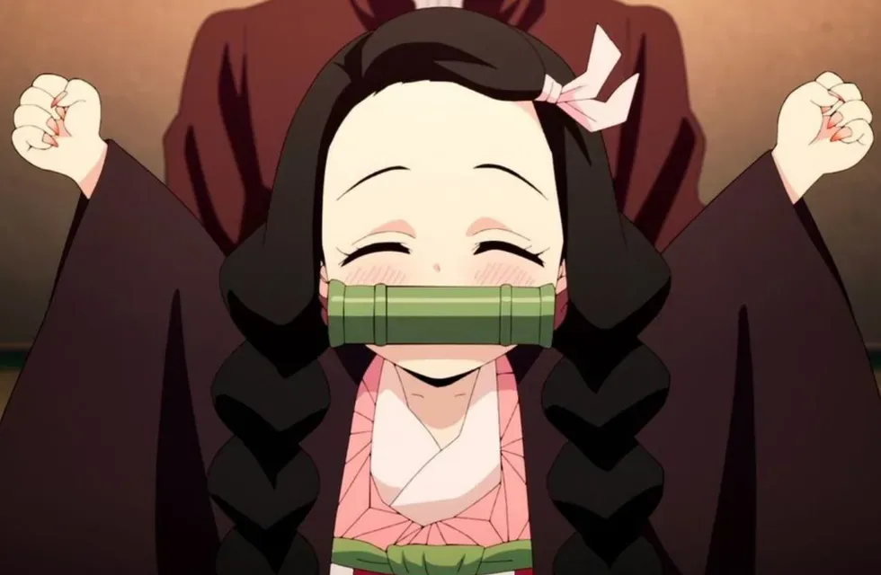

Sobre mí
Antes de ser convertida en Demonio por Muzan, Nezuko tenía el pelo negro recogido en forma de bollo sostenido con un adorno para el cabello de color rosa. Según palabras de Tanjiro, Nezuko era la chica más hermosa de su aldea. Sus ojos tenían rasgos humanos y eran también del mismo color violeta que comparten casi todos los miembros de su familia.
Cuando fue transformada en Demonio por Muzan, sus rasgos físicos cambiaron drásticamente; su pelo permanece suelto con extensiones aplanadas, onduladas y delgadas de un tono degradado de color naranja en sus puntas
